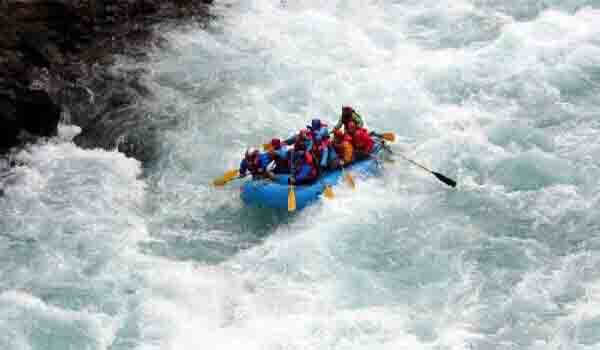

Every river in the world has its own unique identity. More so, rivers are considered as the national treasure of any country. Even India is blessed with numerous rivers. Like many other rivers Kundalika is a small, perennial yet beautiful river in western Maharashtra.
If you want to do something excited, rafting on River Kundalika at Kolad will be an experience in itself. River Rafting is the popular and best adventure sports in Maharashtra.
Kundalika is a beautiful river originating in the Western Ghats of Maharashtra and the rafting experience is really awesome with in 13 km of stretch along with adventure activities like Kayaking, Canoeing and Boating.
The activity started with only three rafts in the beginning and such has been the increasing demand that there are now available more than 50 rafts.making this river a hot spot for such an adventure activity. Rafting on the Kundalika is considered Grade III level because of its limited technical rapids.
The amazing part about the Kundalika is that it is the only river in India where water rafting is possible throughout the year.
Along with fun, thrill and excitement, we can enjoy the presence of such species as Common Kingfishers, Little Cormorant, Crested Serpent, Eagle and Great Hornbill, many of them hovering or moving around with us while rafting.
This place also known as Kolad River Rafting, Kolad is a village in Raigad district, Maharashtra State. It lies on the banks of River Kundalika.
Best time to Visit Kolad for Kundalika Rafting :
The climate in Kolad is of a tropical type and being in the midst of the Sahyadri mountain range the weather is generally pleasant throughout the year so, one can visit Kolad any time of the year.
Monsoons (June to October):
The entire Konkan belt is blessed with heavy rain during the monsoons and this is the best time to visit Kolad for white water river rafting as the water levels in the river are high and the currents get stronger which makes rafting even more exciting and enjoyable.
Monsoons are also an ideal time in Kolad to admire a wide variety of flora and fauna; hear the shrill of the birds chirping and see colorful butterflies.
Winters (November to February):
These are also extremely good months to visit Kolad as the weather during this time is pleasantly cool and comfortable.
we can enjoy rafting, other adventure activities or spend time relaxing and visiting attractions in and around Kolad.
As night falls it gets a bit chilly this is the perfect time to enjoy a barbeque or light a campfire and have a great time with your buddies.
Summers (March to May):
During summer the climate is hotter during the day, but this still does not affect white water rafting activity because rafting takes place in the morning at around 8:00 a.m. and ends by 11:00 a.m. But this is an ideal time for tourists whos prefer lesser crowds and would like to relax, enjoy and experience Kolad.